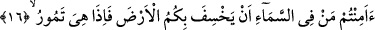

Yeryüzü, yörelerinde yürümenin uygun olması bakımından zelil kılındığına göre orada
olup da boyun eğdirilmeyen hiçbir şey kalmamış demektir. Böylece -menakib
kelimesiyle dağların kasdedilmiş olabileceği takdirine binaen- sâdece dağların üzerinde
gezip dolaşmanın yaklaşım itibariyle hangi bakış açısından ortaya çıktığı anlaşılmış
olur. Fakat dağların içinde öyleleri vardır ki bunların üzerinde yol bulup yürümek
imkânsızdır. Meselâ bizimle Ye’cuc ve Me’cuc arasındaki seddin bulunduğu dağ
böyledir.
Bir hadis-i şerifte, âyetin metninde yer alan “menakib” kelimesiyle kasdedilenin,
üzerinde insanın ayağının kaydığı, sağlamca basamadığı ve yol bulup ilerlemesi
meşakkatli olan yerler olduğu belirtilmiştir. Buralar, nadir olduğu ve az bulunduğu için
itibara alınmamıştır.
et-Te’vilâtü’n-necmiyye’de ifâde olunduğuna göre âyetin tefsiri şu şekildedir: Size
insanlık toprağını boyun eğdirmiş olan O’dur. O hâlde insanlık toprağından ihtiyacınız
olduğu kadar yukarılarından ve aşağılarından kendinize mubah olan cismânî
lezzetlerden tadınız. Bedenlerinizin takviyesi, itâat ve ibâdetlerinizin sebeblerini
hazırlama bakımından şerîatın hükmü budur. Böylece tamamen zayıf düşmemiş ve
ibâdet edecek gücü kaybetmemiş olursunuz.
“Ve Allah’ın rızkından yiyiniz.” Yâni yeryüzünde Allah’ın nimetlerinden olmak üzere
tahıl, meyve vb. nimetleri araştırınız. Buradaki emir şâyet mubahlık ifâde eden emir ise
bu takdirde rızık helâl olan şeyler olmuş olur. Buna karşılık cümle şeklen emir
biçiminde fakat mânâ itibarı ile haber ise o zaman “onun rızkından yiyiniz” değil, “onun
rızkından yersiniz” anlamına gelir. Bu takdirde rızık haram olan nesnelere de şâmil
olmuş olur. Çünkü haram da –her ne kadar alması haram ise de- yine de onun vermiş
olduğu rızıktandır.
“Dönüş ancak O’nadır.” Yâni dirildikten sonra dönüş bir olan Allah’adır. O hâlde
onun nimetlerine şükürde mubalağa ediniz. Arapçada “neşerallahu’l-meyyite neşran”
şeklinde bu kelime müteaddî olarak kullanılır. Bu takdirde mânâsı; “Allah ölüyü
ölümünden sonra diriltti” demek olur. Yine dilde “neşera’l-meyyitu binefsihî” şeklinde
bir diğer kullanım daha vardır. Kısacası bu fiil hem lâzım ve hem müteaddi olur. Ancak
ölen kişi Allah Teâlâ’nın diriltmesi olmaksızın kendi başına canlanamaz. Zira bu
imkânsızdır.
16. Gökte olanın, sizi yere batırıvermeyeceğinden emin misiniz? O zaman yer
sarsıldıkça sarsılır.
“Gökte olanın” yâni şu âlemi çekip çevirme görevi kendilerine yüklenmiş olan
meleklerin ya da Allah Teâlâ’nın yeryüzünü size boyun eğdirdikten, burasının